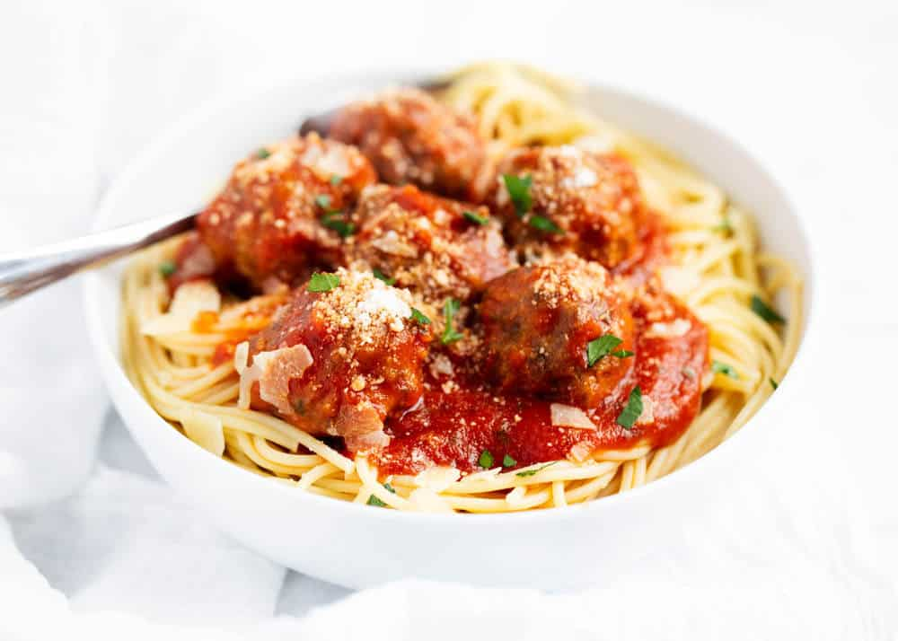
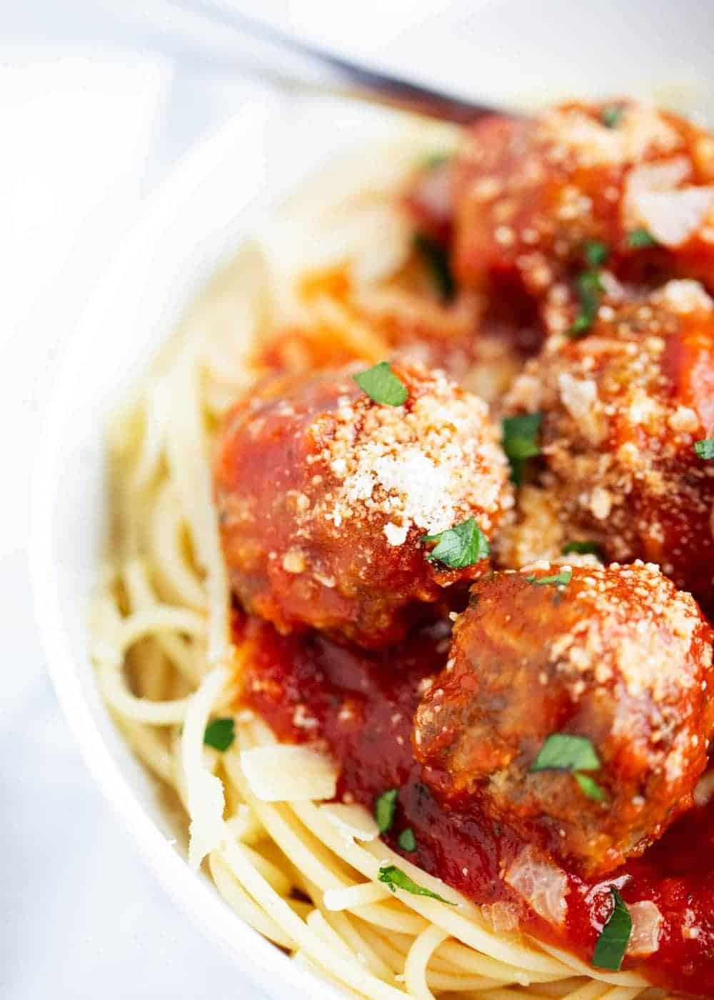
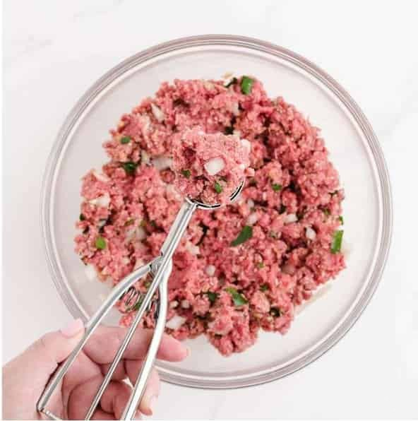

Savory Meatballs
Craving a comforting, homemade meal that’s easy to prepare and full of flavor? These Easy Meatballs are the perfect solution! With just a few simple ingredients, you can whip up tender, juicy meatballs that taste just like your favorite Italian restaurant, all in under 30 minutes. Whether you serve them with marinara sauce over pasta, on a sub roll, or as a snack, they’re sure to be a hit with the whole family.
This recipe is great for busy nights when you want something hearty and delicious but don’t want to spend too much time in the kitchen. The meatballs come together quickly, and they bake to perfection with minimal effort. Plus, they’re easy to customize, whether you like to add extra garlic or top them with fresh herbs.
Here's what you'll need:
- 1 lb 80% lean ground beef (can substitute with half ground pork)
- 1 large egg, beaten
- ¼ cup breadcrumbs
- ¼ cup grated parmesan cheese
- ¼ cup finely chopped onion
- 2 teaspoons minced garlic
- ¾ teaspoon Kosher salt
- ¼ teaspoon ground black pepper
- 2 tablespoons chopped fresh Italian flat-leaf parsley (optional)
Instructions:
- Preheat your oven to 400°F. Line a baking sheet with foil and spray it with non-stick cooking spray.
- In a large bowl, mix together the ground beef, egg, breadcrumbs, parmesan, onion, garlic, salt, pepper, and parsley (if using). 
- Using a medium cookie scoop or spoon, form the mixture into 1 ½-inch meatballs and place them on the baking sheet.
- Bake for 17-20 minutes, or until the meatballs are no longer pink in the center. Turn them halfway through to avoid browning on the bottom.
These meatballs are a great make-ahead meal and can be served with your favorite pasta, on their own with a dipping sauce, or even as a meatball sub.